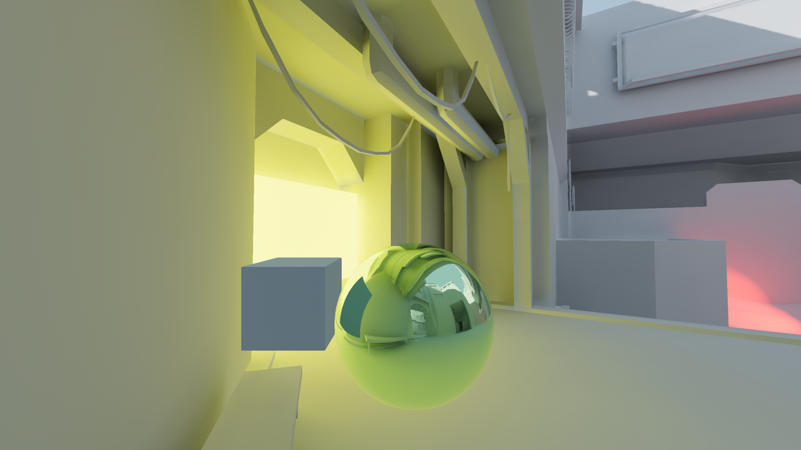
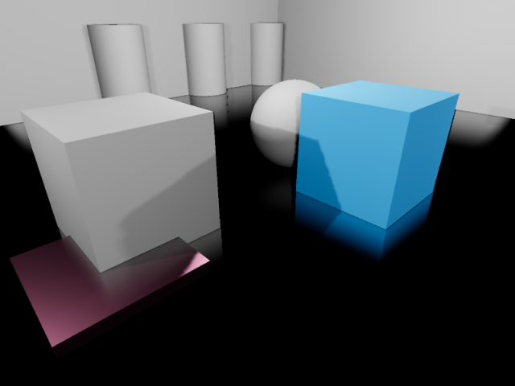
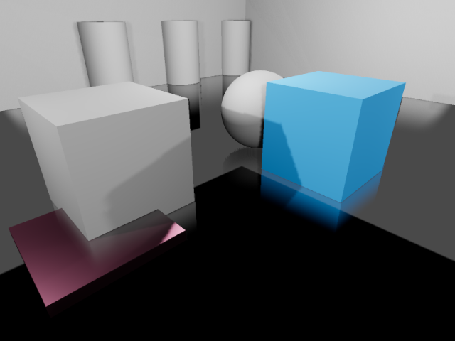

Reflection probes
As stated in the Standard Material 3D and ORM Material 3D, objects can show reflected and/or diffuse light. Reflection probes are used as a source of reflected and ambient light for objects inside their area of influence. They can be used to provide more accurate reflections than VoxelGI and SDFGI while being fairly cheap on system resources.
Since reflection probes can also store ambient light, they can be used as a low-end alternative to VoxelGI and SDFGI when baked lightmaps aren't viable (e.g. in procedurally generated levels).
Reflection probes can also be used at the same time as screen-space reflections to provide reflections for off-screen objects. In this case, Godot will blend together the screen-space reflections and reflections from reflection probes.
See also
Not sure if ReflectionProbe is suited to your needs? See Which global illumination technique should I use? for a comparison of GI techniques available in Godot 4.
Visual comparison

Reflection probe disabled. Environment sky is used as a fallback.

Reflection probe enabled.

Reflection probe enabled with LightmapGI used at the same time. The lightmap appears in the reflection.
By combining reflection probes with screen-space reflections, you can get the best of both worlds: high-quality reflections for general room structure (that remain present when off-screen), while also having real-time reflections for small details.

Reflections in a room using ReflectionProbe only. Notice how small details don't have any reflections.

Reflections in a room using screen-space reflections only. Notice how the reflection on the sides of the room's walls is partly missing due to being off-screen.

Reflections in a room using ReflectionProbe and screen-space reflections together. The screen-space reflections are blended with the reflection probe, acting as a fallback in situations where the reflection probe fails to display any reflection.
Setting up a ReflectionProbe
Add a ReflectionProbe node.
Configure the ReflectionProbe's extents in the inspector to fit your scene. To get reasonably accurate reflections, you should generally have one ReflectionProbe node per room (sometimes more for large rooms).
Tip
Remember that ReflectionProbe extents don't have to be square, and you can even rotate the ReflectionProbe node to fit rooms that aren't aligned with the X/Z grid. Use this to your advantage to better cover rooms without having to place too many ReflectionProbe nodes.
ReflectionProbe properties
Update Mode: Controls when the reflection probe updates. Once only renders the scene once every time the ReflectionProbe is moved. This makes it much faster to render compared to the Always update mode, which forces the probe to re-render everything around it every frame. Leave this property on Once (default) unless you need the reflection probe to update every frame.
Intensity: The brightness of the reflections and ambient lighting. This usually doesn't need to be changed from its default value of
1.0, but you can decrease it1.0if you find that reflections look too strong.Max Distance: Controls the maximum distance used by the ReflectionProbe's internal camera. The distance is always at least equal to the Extents, but this can be increased to make objects located outside the extents visible in reflections. This property does not affect the maximum distance at which the ReflectionProbe itself is visible.
Extents: The area that will be affected by the ReflectionProbe's lighting and reflections.
Origin Offset: The origin to use for the internal camera used for reflection probe rendering. This must always be constrained within the Extents. If needed, adjust this to prevent the reflection from being obstructed by a solid object located exactly at the center of the ReflectionProbe.
Box Projection: Controls whether parallax correction should be used when rendering the reflection probe. This adjusts the reflection's appearance depending on the camera's position (relative to the reflection probe). This has a small performance cost, but the quality increase is often worth it in box-shaped rooms. Note that this effect doesn't work quite as well in rooms with less regular shapes (such as ellipse-shaped rooms).
Interior: If enabled, ambient lighting will not be sourced from the environment sky, and the background sky won't be rendered onto the reflection probe.
Enable Shadows: Controls whether real-time light shadows should be rendered within the reflection probe. Enable this to improve reflection quality at the cost of performance. This should be left disabled for reflection probes with the Always mode, as it's very expensive to render reflections with shadows every frame. Fully baked light shadows are not affected by this setting and will be rendered in the reflection probe regardless.
Cull Mask: Controls which objects are visible in the reflection. This can be used to improve performance by excluding small objects from the reflection. This can also be used to prevent an object from having self-reflection artifacts in situations where Origin Offset can't be used.
Mesh LOD Threshold: The automatic level of detail threshold to use for rendering meshes within the reflection. This only affects meshes that have automatic LODs generated for them. Higher values can improve performance by using less detailed geometry, especially for objects that are far away from the reflection's origin. The visual difference of using less detailed objects is usually not very noticeable during gameplay, especially in rough reflections.
The Ambient category features several properties to adjust ambient lighting rendered by the ReflectionProbe:
Mode: If set to Disabled, no ambient light is added by the probe. If set to Environment, the ambient light color is automatically sampled from the environment sky (if Interior is disabled) and the reflection's average color. If set to Constant Color, the color specified in the Color property is used instead. The Constant Color mode can be used as an approximation of area lighting.
Color: The color to use when the ambient light mode is set to Constant Mode.
Color Energy: The multiplier to use for the ambient light custom Color. This only has an effect when the ambient light mode is Custom Color.
ReflectionProbe blending
To make transitions between reflection sources smoother, Godot supports automatic probe blending:
Up to 4 ReflectionProbes can be blended together at a given location. A ReflectionProbe will also fade out smoothly back to environment lighting when it isn't touching any other ReflectionProbe node.
SDFGI and VoxelGI will blend in smoothly with ReflectionProbes if used. This allows placing ReflectionProbes strategically to get more accurate (or fully real-time) reflections where needed, while still having rough reflections available in the VoxelGI or SDFGI's area of influence.
To make several ReflectionProbes blend with each other, you need to have part of each ReflectionProbe overlap each other's area. The extents should only overlap as little possible with other reflection probes to improve rendering performance (typically a few units in 3D space).
Limitations
When using the Forward+ renderer, Godot uses a clustering approach for reflection probe rendering. As many reflection probes as desired can be added (as long as performance allows). However, there's still a default limit of 512 clustered elements that can be present in the current camera view. A clustered element is an omni light, a spot light, an area light, a decal, or a reflection probe. This limit can be increased by adjusting Max Clustered Elements in Project Settings > Rendering > Limits > Cluster Builder.
When using the Mobile renderer, only 8 reflection probes can be applied on each individual Mesh resource. If there are more reflection probes affecting a single mesh, not all of them will be rendered on the mesh.
Similarly, when using the Compatibility renderer, up to 2 reflection probes can be applied per mesh. If more than 2 reflection probes affect a single mesh, additional probes will not be rendered.